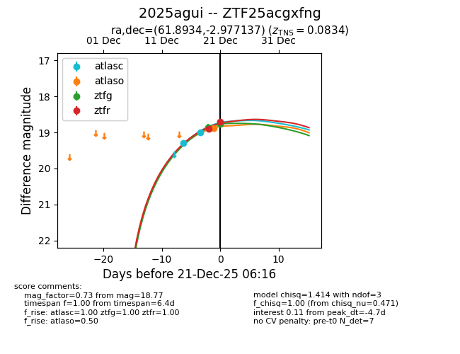
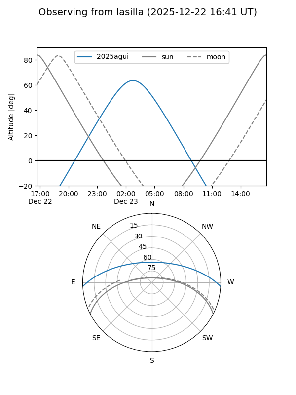
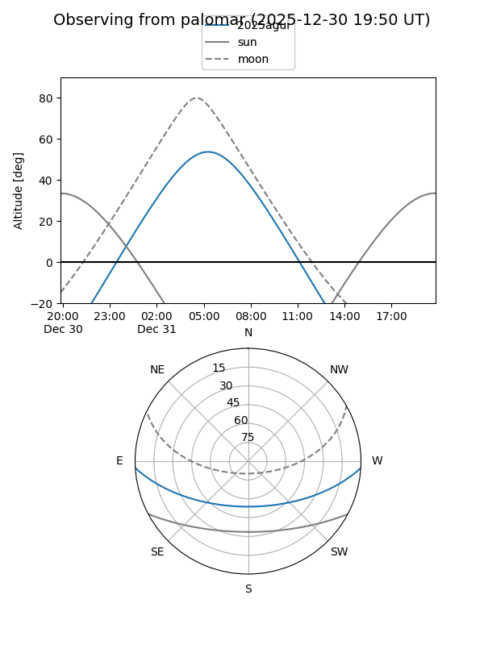
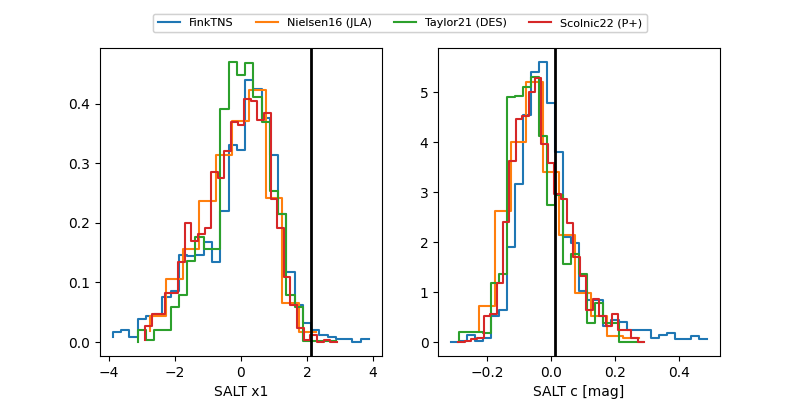

2025agui
Target 2025agui at 2025-12-29 06:11
Aliases and brokers:
FINK: fink-portal.org/ZTF25acgxfng
Lasair: lasair-ztf.lsst.ac.uk/objects/ZTF25acgxfng
ALeRCE: alerce.online/object/ZTF25acgxfng
TNS: wis-tns.org/object/2025agui
YSE: ziggy.ucolick.org/yse/transient_detail/2025agui
alt names
ZTF25acgxfng (ztf,fink_ztf)
2025agui (tns,yse)
Coordinates:
equatorial (ra, dec) = 61.8934,-2.97714
equatorial (HMS+DMS) = 04:07:34.41,-02:58:37.69
galactic (l, b) = (194.4312,-37.32838)
Flags:
Photometry:
last atlasc=18.76, atlaso=18.78, ztfg=18.77, ztfr=18.71
4 atlasc, 2 atlaso, 2 ztfg, 2 ztfr detections
Lightcurve

Visibility


Additional plots
